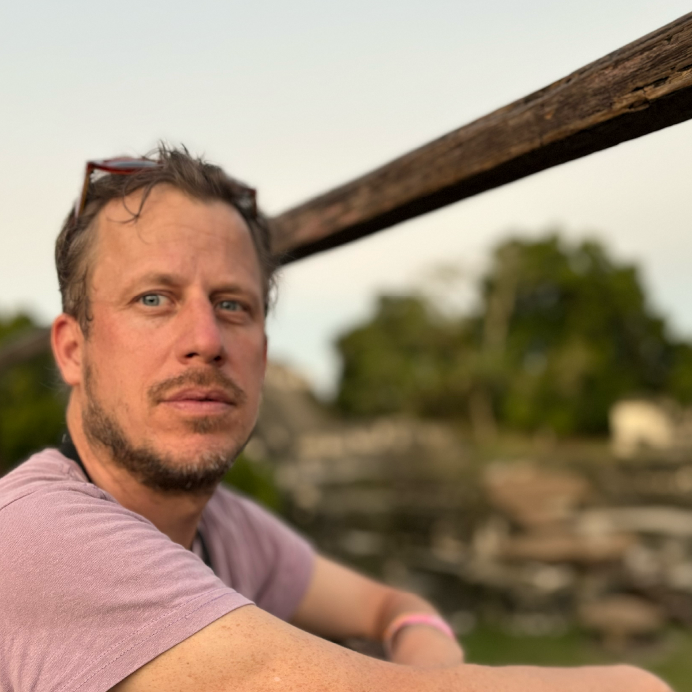

Over

Ik ben Tim Tensen, freelance data-ontwerper en datajournalist.
Ik help redacties en onderzoeksorganisaties om datagedreven verhalen te maken, van ruwe dataset tot publicatieklaar eindproduct.
Bij NRC werkte ik als graphic editor aan grafieken, kaarten, scrollverhalen en animaties voor journalistieke producties. Ik werk graag het hele traject: data zoeken en analyseren, het verhaal vormgeven, en op basis daarvan de visualisatie maken.
Mijn vertrekpunt is vaak geografische analyse. Met GIS als specialisatie zoek ik naar patronen, bewegingen of veranderingen over tijd, en laat de inhoud bepalen welke vorm past bij het verhaal. Dat kan een interactieve kaart zijn, een animatie, een grafiek of een scrollverhaal.
Onderwerpen die me trekken: de invloed van de mens op zijn omgeving, infrastructuur, demografie, klimaat. Eigenlijk alles met een geografische of datagedreven laag waar een verhaal in schuilt.
Waar je me voor kunt inzetten:
"Ik heb een idee voor een verhaal en zoek iemand die vanaf het begin meedenkt vanuit data en visualisatie, zodat we samen tot een krachtig journalistiek eindproduct komen"
"Ik heb een verhaal en wil het visueel sterker maken, met kaarten of graphics op de juiste plek."
"We hebben een onderzoek of rapport afgerond en willen het toegankelijk maken voor een breder publiek."
"Ik heb een dataset liggen. Kun jij eruit halen wat het verhaal is en dit helder communiceren"
"Ik wil verschillende databronnen samenbrengen in één kaart of ruimtelijke analyse."
Gereedschap
QGIS · PostGIS· Python · Illustrator · Blender · After Effects · Flourish / Datawrapper · Mapbox · HTML/CSS
Opdrachtgevers
NRC · Follow the Money · Volkskrant · Den Haag Centraal · RD · Adviesbureau Over Morgen / Arcadis